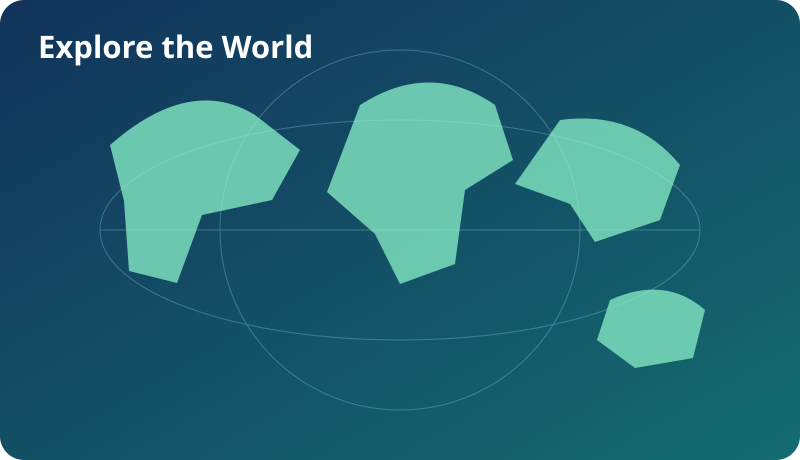
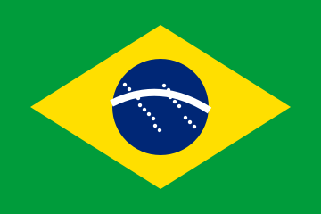
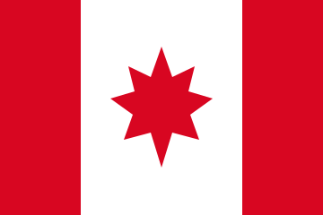

EUROPE
France
Regions, cities, culture, history, everyday life and modern France.
Coming nextJapan is our first fully built country mission. More countries will follow the same structure: places, everyday life, culture, geography, challenges and passport stamps.

These cards show the direction. They are not yet playable country missions.
Regions, cities, culture, history, everyday life and modern France.
Coming nextPeople, cities, languages, culture, geography, business and everyday life.
Coming next
Regions, nature, cities, culture, sport and everyday life.
Coming next
Provinces, cities, landscapes, cultures and life across a huge country.
Coming next